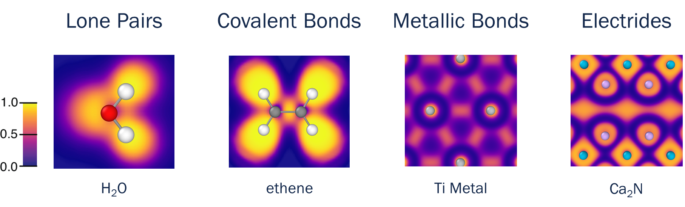
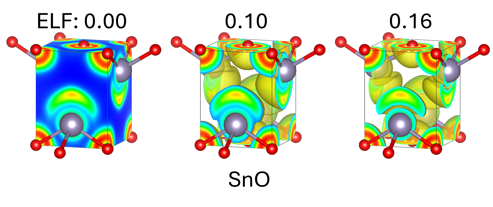
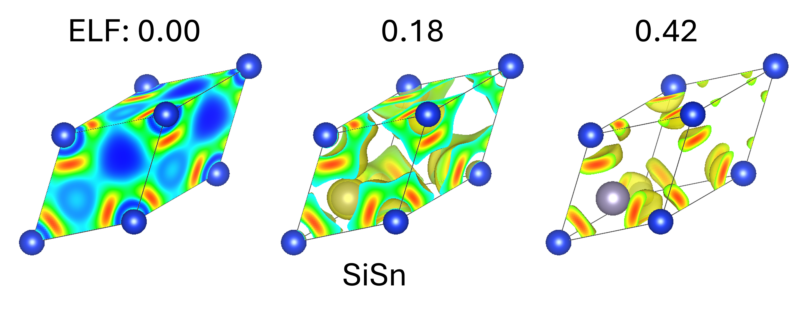
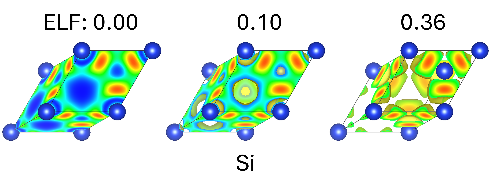
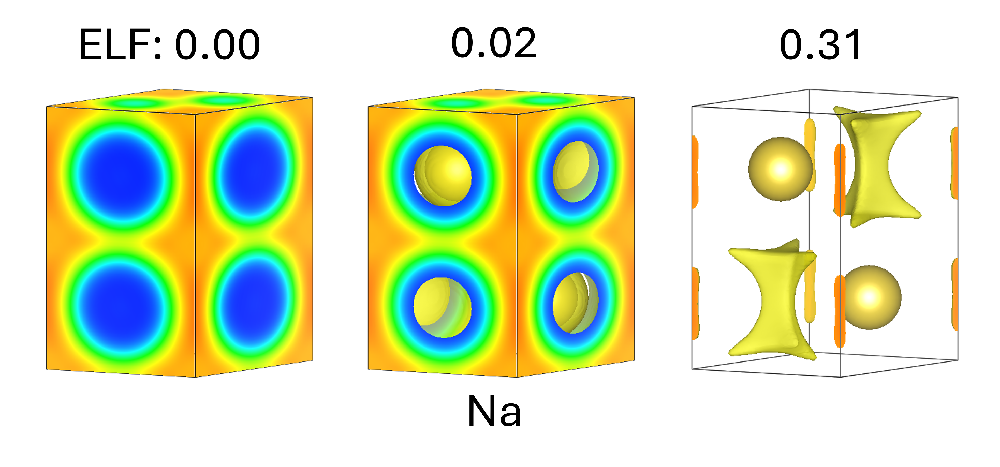
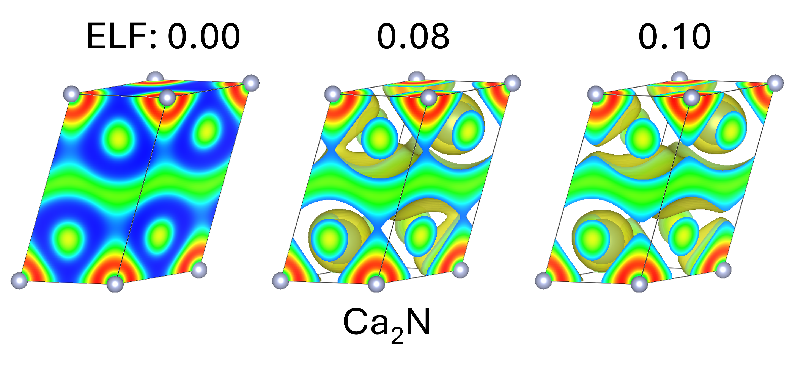

Theoretical Background¶
Introduction¶
Since its conception in 1990 by Becke and Edgecomb, the Electron Localization Function (ELF) has been used by researchers as a tool for analyzing the bonding nature of molecules and solids. This is in large part due to the fact that the ELF tends to conveniently display many of the features familiar to chemists such as atomic orbital shells, covalent bonds, metallic interactions, and lone-pairs.

Integration of charge in the ELF regions associated with these features gives charges close to the expected values. For example, the regions associated with atomic shells contain electron counts that closely match what is expected from the periodic table. The use of the ELF to analyze useful chemical features is made even more convenient by the fact that the ELF is fairly consistent with respect to the level of theory used to calculate it (see Savin et. al.).
The ability of the ELF to consicely represent complex chemical features led researchers to develop methods for categorizing regions of the ELF, largely using ideas similar to those put forth in Bader's Quantum Theory of Atoms in Molecules. These methods have been discussed extensively by many researchers, but we will summarize them here.
Basins, Attractors, and Bifurcation Plots¶
Note
This discussion, and our method for assigning ELF features, is largely based on this review by Carlo Gatti: Chemical bonding in crystals: new directions. We highly recommend exploring this work if ELF topology analysis is of interest to you.
Similar to Bader analysis, the ELF of a system can be divided into regions separated by zero-flux surfaces. Doing so results in distinct regions of space known as basins, with each basin having a single maximum called an attractor.
Each basin represents a distinct chemical feature including atom core shells, lone-pairs, covalent bonds, metallic bonds, and bare electrons. The type of feature can be determined by characterizing features of the ELF around it. A particularly helpful method for assisting with this process is the construction of a type of tree diagram known as a bifurcation plot.
In this method, the regions bounded by an isosurface of the ELF are viewed at different values, f. These regions are called f-localized domains, and correspond to regions where the ELF is greater than or equal to the value f. Any f-domain contains at least one attractor. Domains containing more than one attractor are called reducible while those containing only one are called irreducible. As f is increased, reducible domains split into smaller topologically distinct domains with fewer attractors. The critical f values at which these splits occur are called bifurcations. The final irreducible domains represent the exact same attractors as those described above. Each attractor/basin has characteristics such as a maximum ELF value, volume, position, and "depth". In this context, "depth" refers to the difference in a basin's ELF maximum from the value at which it bifurcates from it's parent reducible domain. Using these characteristics, we can categorize our various domains. Next, we will walk through the process our algorithm uses to determine the types of each attractor, and provide example of bifurcation plots for these attractors.
Types of Attractors¶
Starting at an f value of 0, our entire system is one continuous domain. As we increase the f value, smaller domains begin to split off. Many of these child domains will completely surround exactly one atom. These can be further reduced into one of three main types of features.
-
Atomic Core/Shell. Core electrons fully surround the atom's nucleus and are nearly spherical. In traditional ELF topology analysis, any basin that is not part of the core of the atom is considered a valence basin, mimicking well known atomic models such as those of Lewis.

-
Lone-Pairs. Lone-pairs split off from the core/shell domains at relatively low (~0.2) ELF values and have high ELF values. They don't fully surround the atom and are not along an atomic bond.

-
Heterogenous Covalent Bonds. In some cases, covalent bonds form a reducible domain that fully surrounds the more electronegative atom, similar to atomic shells. However, at higher f values, this domain further splits into smaller domains that do not surround the atom. These attractors have a large depth and are distinct from lone-pairs in that they are always along an atomic bond.

Once the domains surrounding single atoms have split from the ELF, anything left is part of one large valence domain. Again, these features can be one of several types:
-
Homogenous Covalent Bonds. In covalent bonds involving the same atom, the bonds will sit exactly between the two atoms. At low f values they will form a network throughout the system surrounding multiple atoms. At higher f values, this network will split into individual covalent bonds. Just like heterogenous covalent bonds, these are characterized by high depth and their location along an atomic bond.

-
Metallic Character. In most metals, there will be a metallic domain similar to that of a homogenous covalent bond that forms a network throughout the system. However, the metallic domains making up this network have incredibly low depths (~0.02), low volumes and charges, and are typically not located along atomic bonds.

-
Bare Electrons/Electrides. Finally, anything else that splits from the valence domain has a large depth and doesn't sit directly along an atomic bond. These attractors tend to have a larger volume, ELF value, depth, and distance to nearby atoms. This type of feature is found in both electrides and metals, and how to distinguishing them is still up for debate. In our implementation they are separated by a series of user controlled cutoffs.

Note
There may be other types of attractors that are not found with the current algorithm (e.g. the unique features commonly displayed by hydrogen). If you run into an issue with these features and would like us to add support for them, please let our team know on our github issues page.